Guía de procedimientos · ERPNext · erp.nuovocell.com.ve
Para el equipo de compras y ventas a sedes (Base Central y Compuclick)
SOP-00 · Base
Antes de empezar (siempre)
Idea en una frase
ERPNext es un cuaderno compartido: cada compra o venta queda con fecha, usuario y almacén. Borrador aún no cuenta; Enviado ya movió stock y dinero.
Pasos
Abre Chrome e inicia sesión
Entra a https://erp.nuovocell.com.ve con tu usuario.
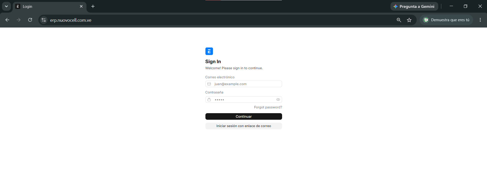
Fig. 0.1 — Login
Elige la compañía correcta
En la factura (campo Compañía) debe quedar:
Compras / ventas de Compuclick → COMPUCLICK
Compras / ventas de Base Central → BASE CENTRAL
Error frecuente
Dejar NUOVOCELL y creer que estás comprando para Compuclick o Base Central (cámbiala antes de cargar productos).
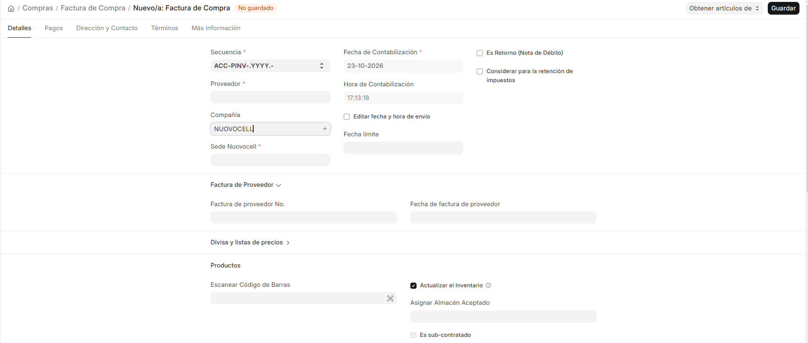
Fig. 0.2 — Campo Compañía (cámbiala a BASE CENTRAL o COMPUCLICK)
Usa el nombre completo del almacén (el que termina en - BC, - CC o - NC)
Ejemplos correctos: Base - BC, Disponible para Venta - CC, DISPONIBLE - BARUTA - NC.
No elijas solo el nombre de la sede o carpeta (ej. BARUTA - NC sin la palabra DISPONIBLE).
Crear artículo
Crear un artículo (Producto)
Para qué sirve
Antes de comprar o vender algo en ERPNext, ese producto tiene que existir en el sistema.
Aquí creas el producto (nombre, grupo y si lleva IMEI). Es como darlo de alta en el catálogo de Profit.
Docs: Item
Importante (caso real)
La casilla Posee número de serie no se puede cambiar después de que el artículo ya tuvo movimientos de stock. Si se te olvidó marcarla, hay que crear un artículo nuevo y pasar la existencia con Reempaque. Revisa la casilla antes de Guardar.
Pasos
Entra al módulo Almacén
En el menú principal (o con Ctrl+K) abre el módulo Almacén.
Verás el tablero de inventario (gráficos, valor de stock, etc.).
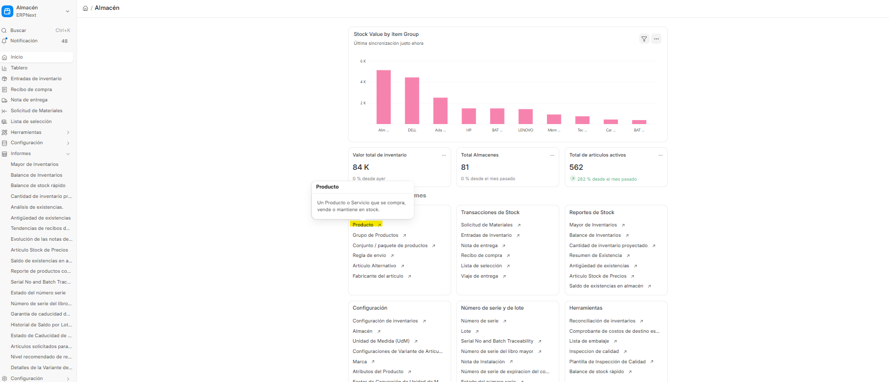
Fig. C.1 — Módulo Almacén · haz clic en Producto
Abre Producto
En la sección Maestros de informes (o el listado de opciones del módulo),
haz clic en Producto. Se abre la lista de todos los productos.
Pulsa + Agregar Producto
Arriba a la derecha de la lista, pulsa + Agregar Producto.
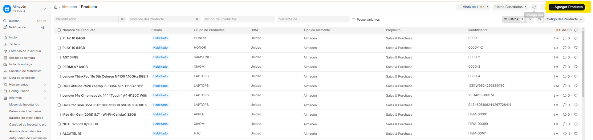
Fig. C.2 — Lista Producto · + Agregar Producto
Llena los datos básicos
Campo
Qué hacer
Secuencia / código
Ya viene elegido por el sistema (ej. ITEM-.#####). No lo cambies.
Nombre del producto
Escríbelo claro (como lo buscan en almacén).
Grupo de productos
Elige el grupo que corresponda (teléfonos, forros, etc.).
UdM predeterminada
Ya viene en Unidad por default. No la quites ni la cambies.
Mantener stock
Ya viene marcada por default. No la desmarques (es mercancía física).
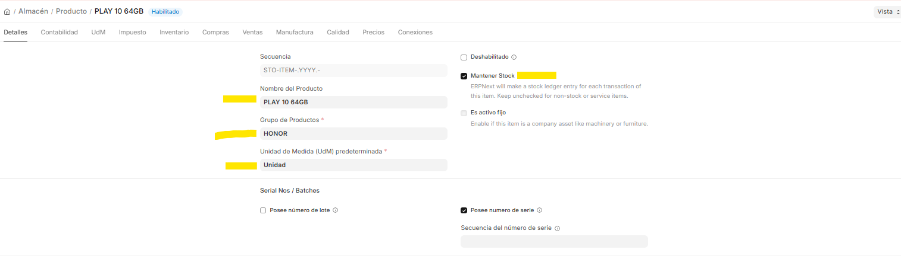
Fig. C.3 — Datos básicos (deja los default como están)
¿Lleva IMEI / número de serie?
En la sección Números de serie / Lotes:
Tipo de producto
Posee número de serie
Teléfonos, laptops, tablets, EcoFlow, SIM
✅ Márcala antes de Guardar
Accesorios (forros, cargadores, mouse, vidrios…)
❌ Déjala sin marcar
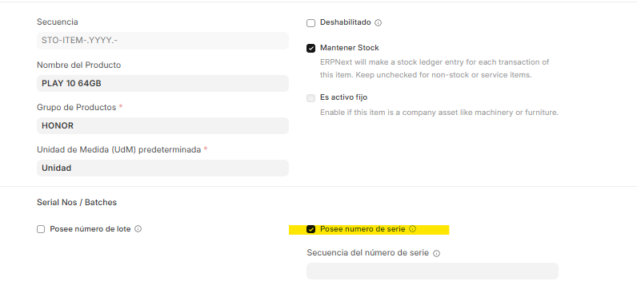
Fig. C.4 — Posee número de serie
Permitir compras y ventas
Deja marcados Permitir ventas y Permitir compra (salvo que te indiquen lo contrario).
Guardar
Pulsa Guardar. Ya puedes usar este producto en una Factura de compra.
Cómo sé que quedó bien
El producto aparece en la lista; al buscarlo en una factura de compra sale el código; si es teléfono/laptop, la casilla de serial está ✅.
SOP-01 · Compra
Hacer una compra (Factura de compra)
Qué es
Un solo documento hace dos cosas: sube el inventario al almacén que elijas y deja la deuda con el proveedor (después la registra el área de CxP / pagos). Analogía Profit: cargar la compra y que el stock suba en el almacén elegido.
Docs: Purchase Invoice
Cuándo usar esto
Llegó (o pagaste) mercancía de un proveedor y hay que registrarla en ERPNext.
Compra directa: no hace falta Orden de compra (PO).
Pasos (sin serial / accesorios)
Abre Factura de compra → Agregar Factura de Compra
Barra de búsqueda (Ctrl+K) → escribe Factura de compra → en la lista pulsa el botón
+ Agregar Factura de Compra (arriba a la derecha).
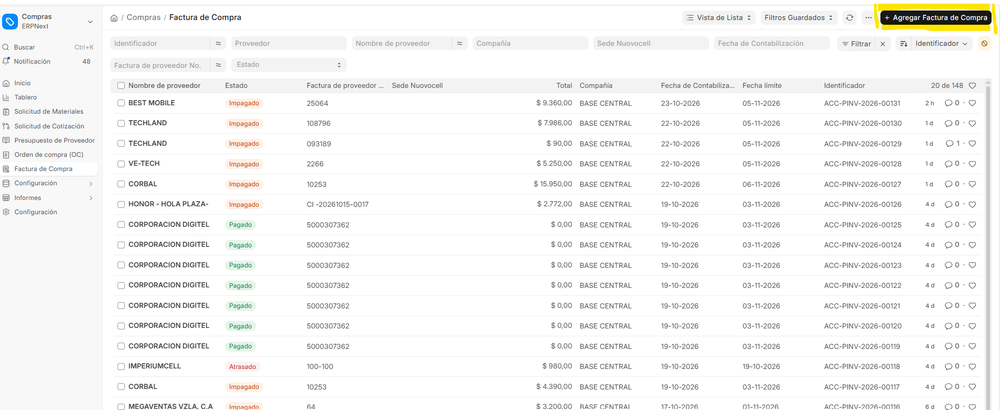
Fig. 1.1 — Botón + Agregar Factura de Compra
Llena la cabecera
Campo
Qué poner
Compañía
COMPUCLICK o BASE CENTRAL (la que estés usando)
Proveedor
El proveedor de la factura física
Fecha de contabilización
Día en que llegó / debe contar el stock
Factura de proveedor No.
Número de la factura del proveedor (para buscarla después)
Elige el almacén (Almacén aceptado o por fila)Almacén aceptado (arriba del documento): si lo llenas, ese almacén se aplica
a todos los artículos que agregues después.
BASE CENTRAL (caso normal)
Pon en Almacén aceptado: Base - BC (ahí entra casi toda la mercancía de central).
COMPUCLICK (varios almacenes en la misma compra)
Si en una sola factura vas a meter cosas en almacenes distintos
(ej. En Tránsito - CC, Por ingresar - CC, Disponible para Venta - CC,
En Reparación - CC, Cementerio - CC),
deja Almacén aceptado vacío y elige el almacén
en cada fila del artículo.
Si toda la factura va al mismo almacén en Compuclick
Sí puedes usar Almacén aceptado (ej. todo a Disponible para Venta - CC o todo a En Tránsito - CC).
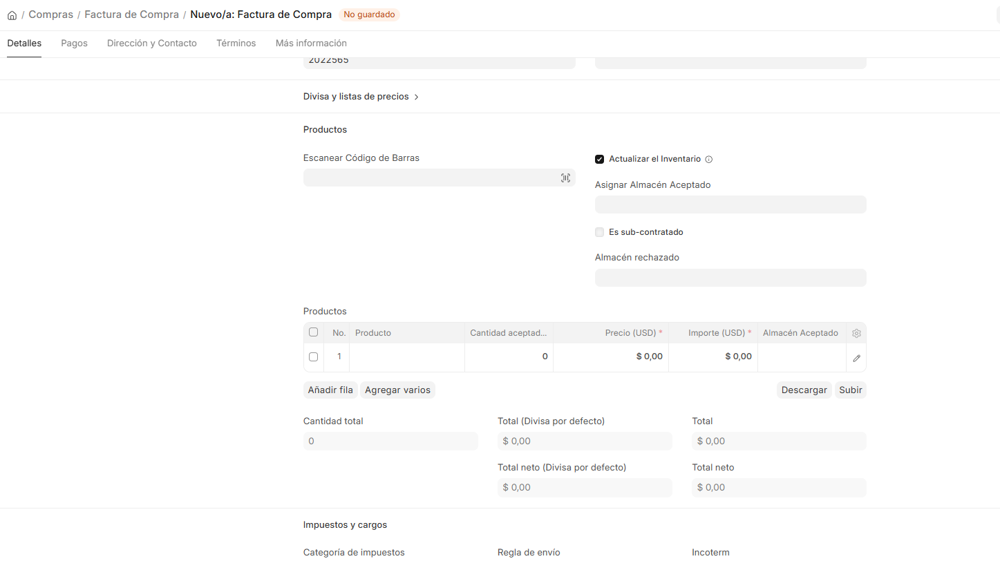
Fig. 1.3 — Asignar Almacén Aceptado (arriba) vs Almacén Aceptado en cada fila
Agrega los productos
En la tabla: código · cantidad · precio unitario igual a la factura del proveedor.
Si no usaste Almacén aceptado, revisa el almacén de cada fila.
Revisa que el Total general coincida con la factura física.
Tip decimales
Si el proveedor trae más de 2 decimales y no cuadra el centavo, usa Monto de descuento adicional para empatar el total (caso TECHLAND).
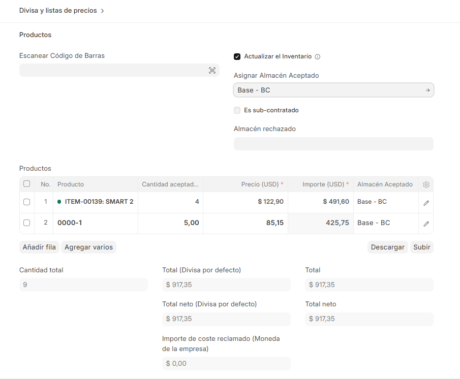
Fig. 1.4 — Ítems y total
Guardar → Enviar
Primero Guardar (borrador). Revisa. Luego Enviar. Solo Enviado mueve el inventario.
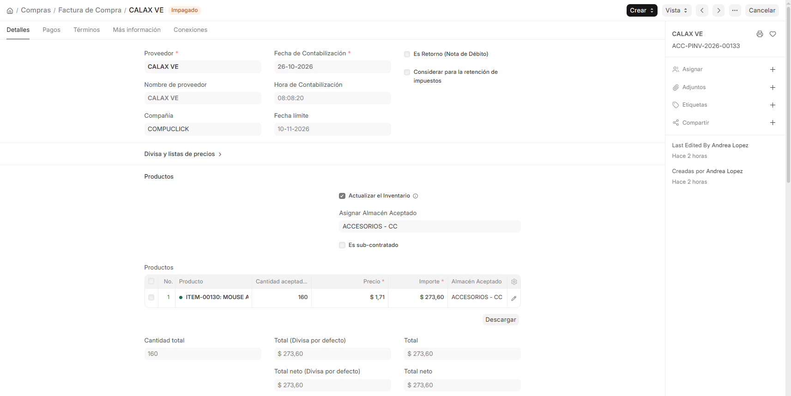
Fig. 1.5 — Documento Enviado
Si el producto tiene IMEI / serial
Antes
El artículo debe haberse creado con Posee número de serie ✅ (ver Crear un artículo).
La cantidad de la fila debe ser igual al número de IMEI que vas a pegar (1 serial = 1 unidad).
En la fila del producto, pulsa el lapicito (Editar)
En la tabla Productos, a la derecha de la fila, verás un icono de lápiz.
Pasa el mouse: debe decir Editar. Haz clic ahí. Se abre la ventana
Editando fila #…
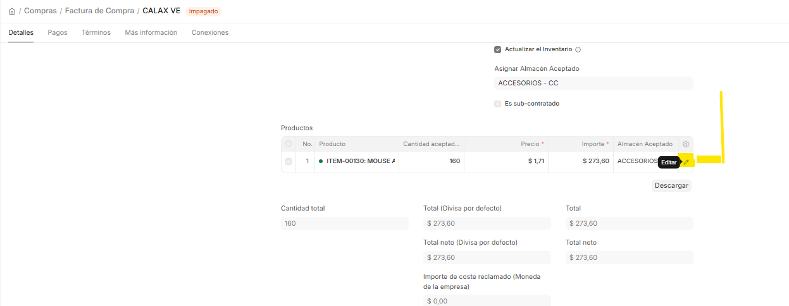
Fig. 1.6a — Pulsa el lapicito (Editar) en la fila
Haz scroll hacia abajo dentro de esa ventana
La caja de seriales no está arriba. Baja con la rueda del mouse o la barra
de la derecha hasta la sección de almacén / números de serie.
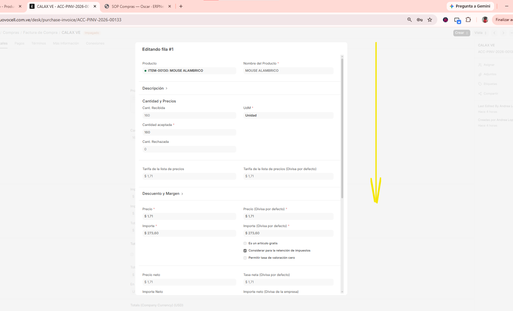
Fig. 1.6b — Scroll down hasta llegar a Número de serie
Ingresa los IMEI / seriales
Marca Utilice los campos número de serie / lote (si no está marcada).
En el recuadro Número de serie, pega o pistolea un IMEI por línea
(o separados como indique la pantalla).
Cuenta: si la cantidad de la fila es 7, deben ser 7 seriales.
Revisa que el Almacén de esa fila sea el correcto (ej. Base - BC).
Cierra / confirma la fila y vuelve a la factura.
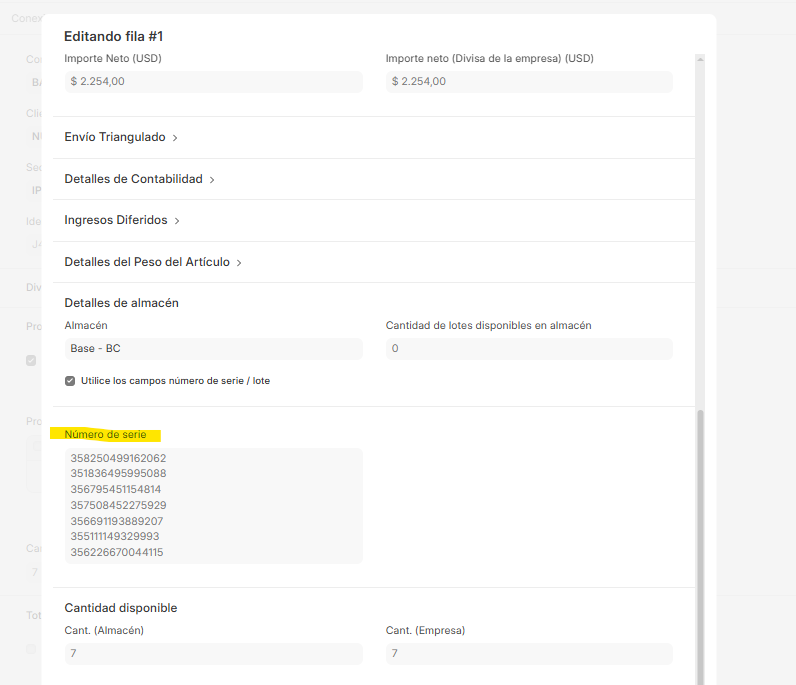
Fig. 1.6c — Recuadro Número de serie (IMEI ingresados)
Repite por cada fila que lleve serial
Si hay varios modelos con IMEI, abre el lapicito de cada fila y carga sus seriales.
Luego Guardar → Enviar la factura.
Cómo sé que quedó bien
Balance de inventario · misma Compañía · el artículo subió en el almacén que elegiste (ej. Base - BC o Disponible para Venta - CC).
Si hay IMEI: lista Serial No → buscar un IMEI → almacén correcto.
Estado Impagado o Atrasado = factura verificada; falta que el área de CxP / pagos reporte el pago.
Errores típicos
Compañía equivocada · poner Almacén aceptado en CC cuando cada ítem va a un almacén distinto ·
precio distinto a la factura física · cantidad ≠ número de seriales · no abrir el lapicito y creer
que el IMEI se pone en la descripción · Enviar sin revisar total.
SOP-02 · Venta a sede
Hacer una venta a una sede
Para qué sirve
Cuando Central (Base Central o Compuclick) le entrega mercancía a una tienda Nuovocell,
se hace una Factura de venta al cliente NUOVOCELL C.A. indicando la Sede.
Así baja el stock de central y la tienda queda debiendo.
Después hay un segundo documento (compra intercompany) para que el stock aparezca en la tienda.
Docs: Inter Company Invoices
Pasos — lado central (tú)
Entra al módulo Ventas
En el menú principal, haz clic en el icono Ventas.
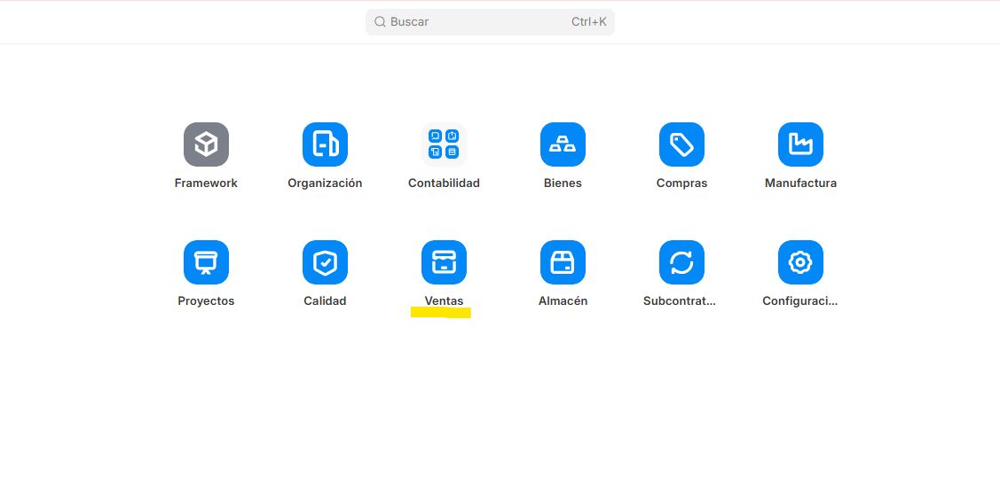
Fig. 2.1 — Menú principal · Ventas
Abre Factura de Venta
Dentro de Ventas, elige Factura de Venta
(en el menú de la izquierda o en la tarjeta del tablero). Hay dos sitios; cualquiera de los dos sirve.
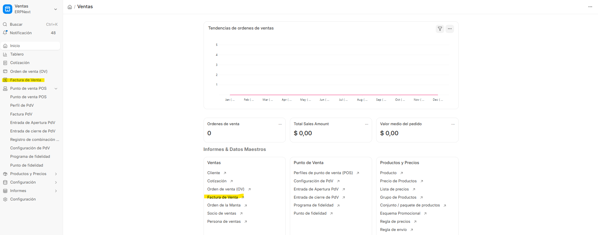
Fig. 2.2 — Elige Factura de Venta
Pulsa + Agregar Factura de Venta
En la lista, arriba a la derecha, pulsa + Agregar Factura de Venta.
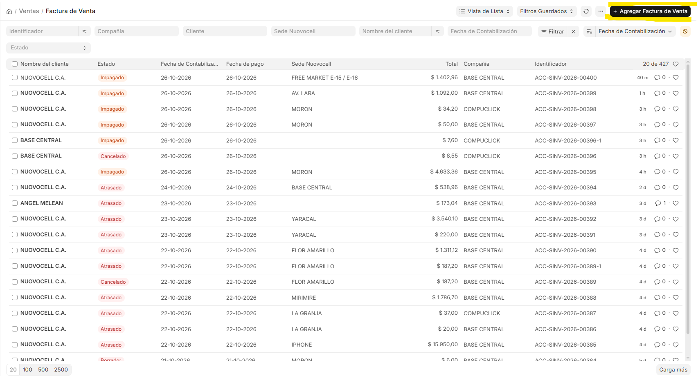
Fig. 2.3 — + Agregar Factura de Venta
Elige Compañía, Cliente y Sede
Estos campos se llenan dentro de la factura nueva (no antes).
Varias personas tienen acceso a más de una compañía: aquí eliges de dónde sale la mercancía.
Campo
Qué poner
Compañía
BASE CENTRAL o COMPUCLICK (desde donde sales). No NUOVOCELL.
Cliente
NUOVOCELL C.A.
Sede Nuovocell
La tienda exacta (Free Market, Av. Lara, Baruta…). Revisa dos veces.
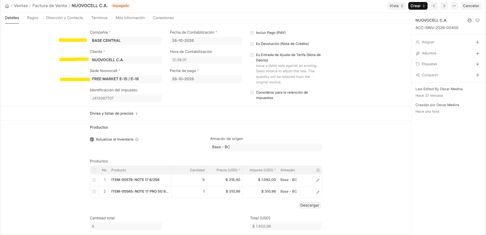
Fig. 2.4 — Compañía · Cliente · Sede
Productos, almacén y precio
Agrega código · cantidad · precio (según regla del equipo, normalmente con % a sede). Almacén de origen / almacén de cada fila = de dónde sale la mercancía, por ejemplo:
Base - BC (Base Central) o Disponible para Venta - CC (Compuclick).
Centro de costos = el de esa compañía (ej. Principal - BC).
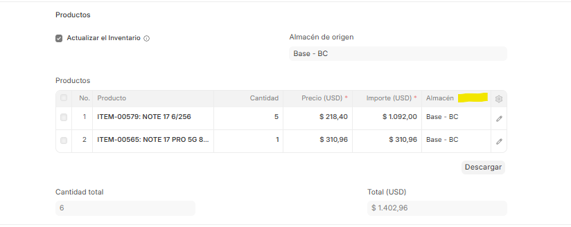
Fig. 2.5 — Ítems y almacén de origen
Si hay IMEI: lapicito → seriales (igual que en compra)
En cada fila con equipo: lapicito Editar → scroll down → pegar un IMEI por unidad.
Cantidad de la fila = número de seriales.
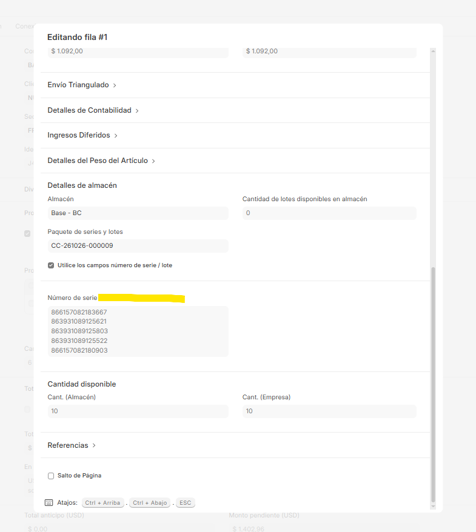
Fig. 2.6 — IMEI en la venta
Guardar → Enviar
Revisa Compañía, Sede y almacén otra vez. Luego Enviar.
Pasos — lado tienda (intercompany)
En la FV enviada: Crear → Factura de compra intercompany
Con la Factura de venta ya Enviada, arriba pulsa Crear →
Factura de compra intercompany.
Se abre sola una factura en compañía NUOVOCELL.
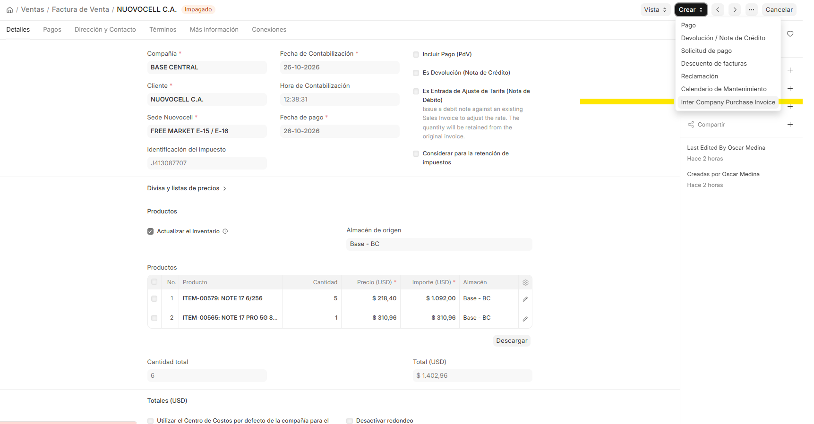
Fig. 2.7 — Crear intercompany
Verifica que los datos se rellenaron solos (sobre todo el almacén)
Al pulsar el botón, el sistema rellena automáticamente productos, cantidades,
precios y el Almacén aceptado de la sede (ej. DISPONIBLE - FREE MARKET E-15 / E-16 - NC,
DISPONIBLE - BARUTA - NC, etc.).
Revisa que el almacén sea el Disponible de ESA sede (debe decir DISPONIBLE y el nombre de la tienda).
No elijas solo BARUTA - NC u otra carpeta sin la palabra DISPONIBLE.
Si algo no cuadra, corrígelo ahora.
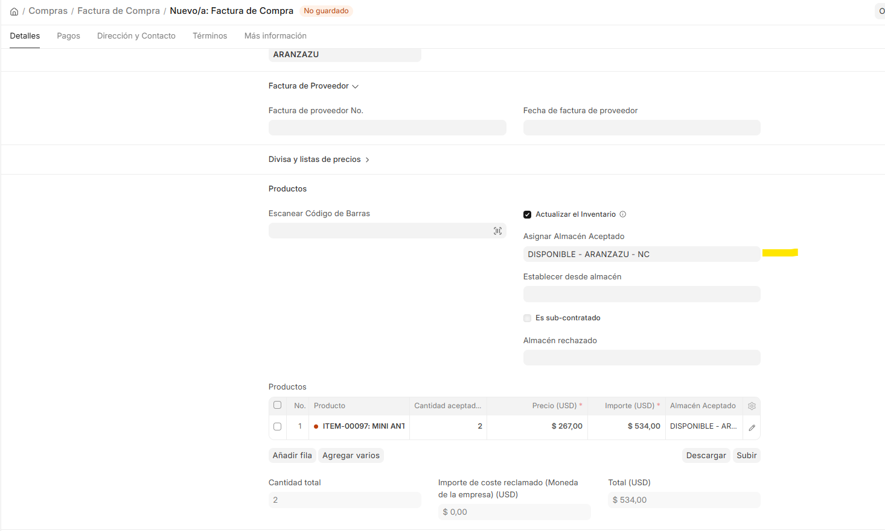
Fig. 2.8 — Verificar almacén y datos auto-rellenados
Primero Guardar (borrador), después Enviar
Pulsa Guardar → queda en Borrador. Así no se pierde el documento.
Revisa otra vez Compañía NUOVOCELL, almacén Disponible de la sede y totales.
Pulsa Enviar (validar). Solo entonces el stock entra a la tienda.
Importante
Si cierras la pantalla sin Guardar el borrador, la factura de compra intercompany se pierde y tienes que crearla de nuevo desde la FV.
Siempre: Guardar primero → luego Enviar.
(Opcional) Imprimir PDF para la tienda
En la FV de central → Imprimir → formato FV - Base Central (o el de CC si aplica).
Cómo sé que quedó bien
FV de central Enviada (no Borrador).
Compra intercompany también Enviada (no solo borrador).
En la FV, pestaña Conexiones → aparece la Factura de compra intercompany.
Errores típicos
FV hecha en NUOVOCELL (al revés) · Sede equivocada · almacén sin la palabra DISPONIBLE ·
cerrar la intercompany sin Guardar (se pierde) · dejarla en borrador y creer que ya entró el stock.
SOP-03 · Revisar facturas
Revisar mis facturas (compra y venta)
Para qué sirve
Antes de preguntar “¿ya salió?” o “¿cuánto debe?”, miras el estado del documento y las conexiones.
Qué significan Impagado y Atrasado
Si el estado es Impagado o Atrasado, la factura ya está
verificada / Enviada (el stock y la deuda ya cuentan).
Solo falta que el área de CxP / pagos reporte el pago en ERPNext.
No significa que esté mal hecha ni en borrador.
A) Facturas de compra (lo que te vendieron a ti)
Lista Factura de compra
Filtra por Compañía (CC o BC) y fechas. Opcional: Proveedor.
En la columna Estado verás Impagado, Atrasado, Pagado, etc.
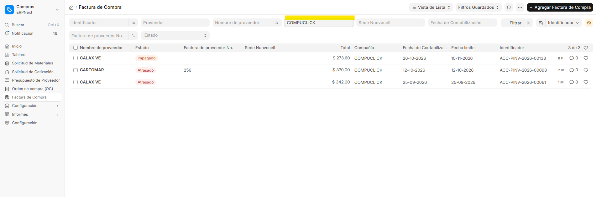
Fig. 3.1 — Lista compras (Impagado / Atrasado = lista para que CxP reporte el pago)
Abre una factura y mira
Pregunta
Dónde se ve
¿Ya está verificada?
Estado Impagado o Atrasado (o Pagado / Parcial) — ya no es Borrador
¿Subió stock?
Balance de inventario en el almacén que elegiste
¿Número del proveedor?
Campo Factura de proveedor No.
¿Quién registra el pago?
El área de CxP / pagos — mientras esté Impagado o Atrasado, el pago aún no está reportado
B) Facturas de venta a sedes (lo que tú les facturaste)
Lista Factura de venta · Cliente NUOVOCELL C.A.
Filtra Compañía + fechas. Mira columna Sede, Estado y Monto pendiente.
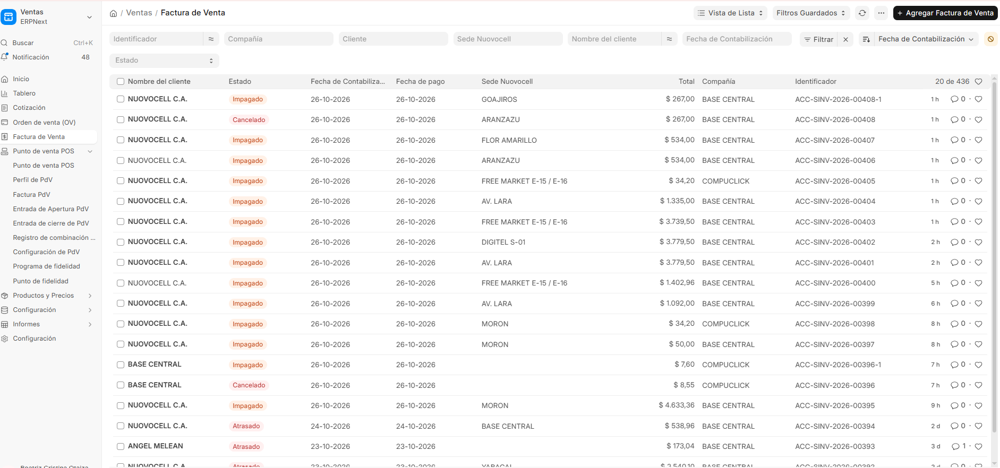
Fig. 3.2 — Ventas a sedes
Tres preguntas por cada FV
Pregunta
Dónde
¿Está verificada?
Estado Impagado / Atrasado / Parcial / Pagado (no Borrador)
¿Llegó al inventario de la tienda en el sistema?
Conexiones → Factura de compra intercompany (enviada)
¿Cuánto debe todavía esa sede?
Monto pendiente · Impagado / Atrasado = pendiente de abono
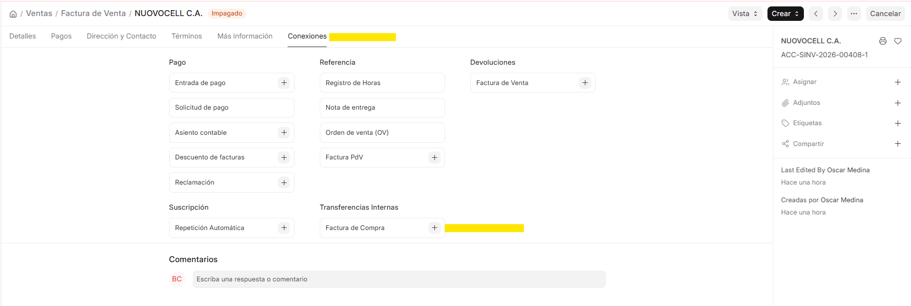
Fig. 3.3 — Conexiones intercompany
Informe útil
Para ver deudas por sede: informe / vista CxC por Cliente y Sede (lado central). Guía del equipo: one pager de informes.
SOP-04 · Inventario / IMEI
Revisar inventario en el almacén
Qué es
El Balance de inventario responde “¿cuántas unidades hay aquí ahora?”.
Los IMEI no salen en ese balance: se buscan en Serial No.
Docs: Stock Balance
Pasos — cantidades por almacén
Busca Balance de inventario (Stock Balance)
Ctrl+K → Balance de inventario / Stock Balance.
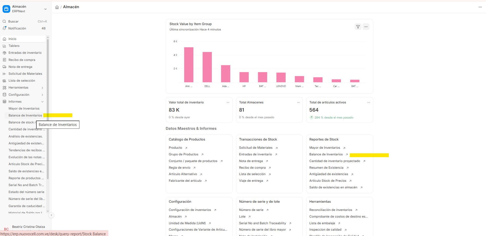
Fig. 4.1 — Abrir el informe
Pon los filtros
Filtro
Ejemplo
Compañía
COMPUCLICK o BASE CENTRAL
Almacén
El nombre completo, ej. Base - BC o Disponible para Venta - CC
Hasta / fecha
Hoy, o una fecha igual o posterior a cuando cargaste Opening / compras
Artículo (opcional)
Un código concreto
Importante — Generar / Reconstruir informe
Después de poner los filtros, pulsa el botón Generar informe o
Reconstruir informe (según cómo diga la pantalla).
Si no lo pulsas, pueden salir datos viejos o ningún dato, aunque el stock sí esté cargado.
Si “no aparece” stock que sí cargaste
Casi siempre la fecha Hasta es anterior al documento. Súbela y vuelve a pulsar Generar / Reconstruir informe.
Revisa el resultado
Mira cantidad y valor. Exporta si lo pide el auditor.
Pasos — dónde está un IMEI / serial
Entra al módulo Almacén (o busca con Ctrl+K)
En el menú principal abre Almacén.
Alternativa: Ctrl+K → escribe Serial No o Número de serie y ábrelo directo.
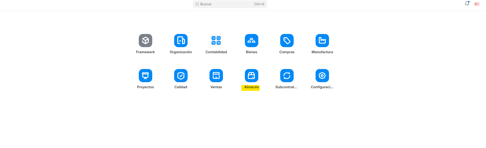
Fig. 4.3 — Módulo Almacén
Ubica Número de serie en la pantalla
En el tablero de Almacén, busca la tarjeta Número de serie y de lote
y haz clic en Número de serie (también aparece en el menú de la izquierda).
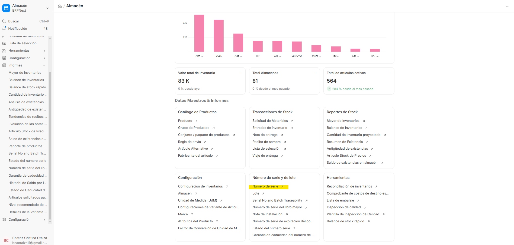
Fig. 4.4 — Clic en Número de serie
Busca el IMEI y lee almacén + estado
En la lista, usa el filtro Identificador (pega el IMEI) o busca por código de producto.
Abre la fila: mira Almacén y la columna Estado.
Estado
Qué significa
Activo
El equipo está dentro de un almacén (disponible en el sistema).
Delivered (entregado)
Ya se envió / vendió (salió del almacén).
Inactivo
No está disponible (por ejemplo se canceló la compra, se anuló el movimiento, o el serial quedó fuera de uso).
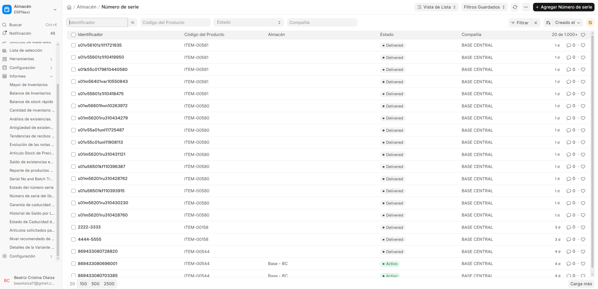
Fig. 4.5 — IMEI · almacén · estado
Tres reportes clave de seriales (leyenda)
Para qué sirven
El Balance dice “cuántas unidades hay”. Estos tres reportes responden preguntas
por IMEI. Están en Almacén → tarjeta Número de serie y de lote (o en Informes).
Reporte
Para qué lo usas
Número de serie (Serial No)
Encontrar un IMEI / serial concreto: en qué almacén está y su estado (Activo, Delivered, Inactivo).
Serial No and Batch Traceability (Trazabilidad de serial y lote)
Conectar ese serial con los documentos por los que pasó (factura de compra, factura de venta, traslados…) y cuándo se hizo cada movimiento.
Número de serie del libro mayor (Serial No Ledger)
Ver qué seriales específicos de un equipo entraron o salieron en cada compra/venta y a qué costo.
Cómo elegir rápido
“¿Dónde está este IMEI?” → Número de serie
“¿En qué factura se compró / vendió?” → Serial No and Batch Traceability
“¿Qué IMEI salieron en esa venta y a qué costo?” → Número de serie del libro mayor
Otras preguntas (sin serial)
Pregunta
Dónde
¿Cuántas unidades hay por almacén?
Balance de inventario (arriba)
¿Qué entró y salió de un artículo (sin IMEI)?
Libro mayor de inventario (Stock Ledger)
¿Qué compré este mes?
Registro de compras (Purchase Register)
SOP-05 · Devolución a proveedor
Devolución a proveedor (y verificar inventario)
Para qué sirve
Cuando hay que devolver mercancía al proveedor (defectuosa, sobrante, error de pedido),
no borres ni canceles la compra original.
Se crea una devolución / nota de débito ligada a esa Factura de compra:
baja el stock del almacén y baja (o genera crédito en) lo que se le debe al proveedor.
Docs: Debit Note ·
Purchase Invoice
No confundir
Esto es devolución a un proveedor externo (compra de BC o CC).
No es la devolución de una sede Nuovocell a central (ese es otro flujo intercompany).
Pasos
Entra a Compras → Factura de compra
Menú principal → Compras → Factura de compra
(o Ctrl+K → Factura de compra).
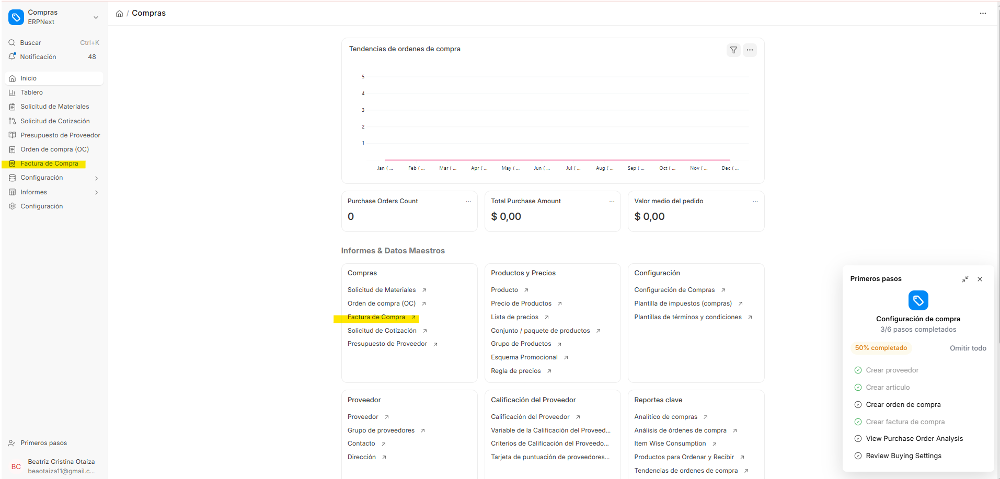
Fig. 5.1 — Lista Factura de compra
Abre la compra original (ya Enviada)
Busca la factura del proveedor de la que vas a devolver
(por N° de factura de proveedor, proveedor, fechas o identificador).
Debe estar Enviada (Impagado / Atrasado / Pagado…), no en Borrador.
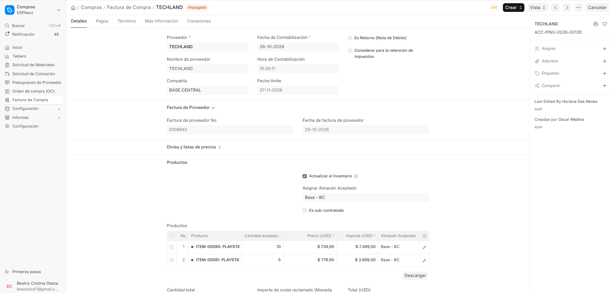
Fig. 5.2 — Compra original
Crear → Retorno / Nota de Crédito
Arriba, botón Crear → Retorno / Nota de Crédito
(en inglés: Return / Debit Note).
Se abre una factura nueva con la casilla Es Retorno (Nota de Débito) marcada
y el enlace a la compra original.
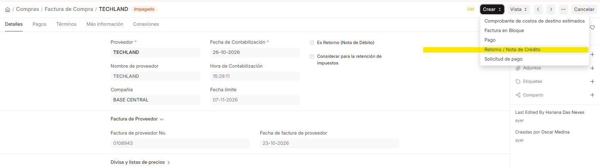
Fig. 5.3 — Crear → Retorno / Nota de Crédito
Deja solo lo que realmente vas a devolver
Quita filas que no se devuelven.
Cantidad en negativo (ej. -2 si devuelves 2 unidades) o la cantidad de devolución que muestre la pantalla.
Compañía = la misma de la compra (BASE CENTRAL o COMPUCLICK).
Proveedor = el mismo.
Los montos de la devolución suelen verse en negativo (a favor / contra la deuda).
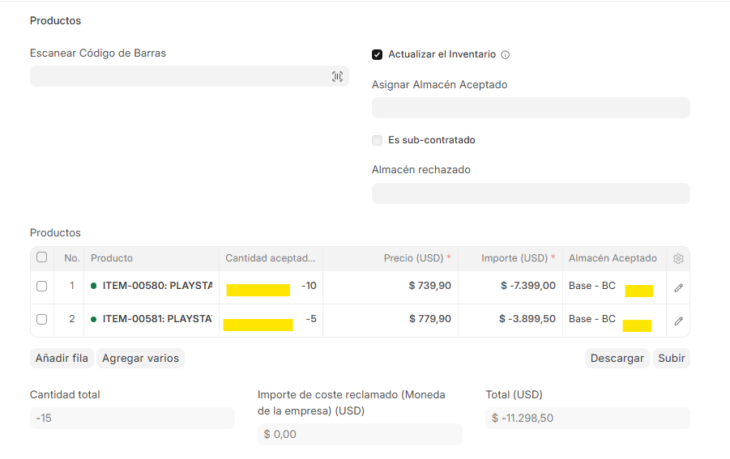
Fig. 5.4 — Solo lo que se devuelve (montos en negativo)
Almacén + Actualizar inventario (para que salga del stock)
Confirma que Actualizar el inventario esté marcado (suele venir así en la devolución)
y que el Almacén sea de donde está la mercancía hoy, por ejemplo
Base - BC o Disponible para Venta - CC.
Si no actualiza inventario, baja la deuda pero el stock no sale.
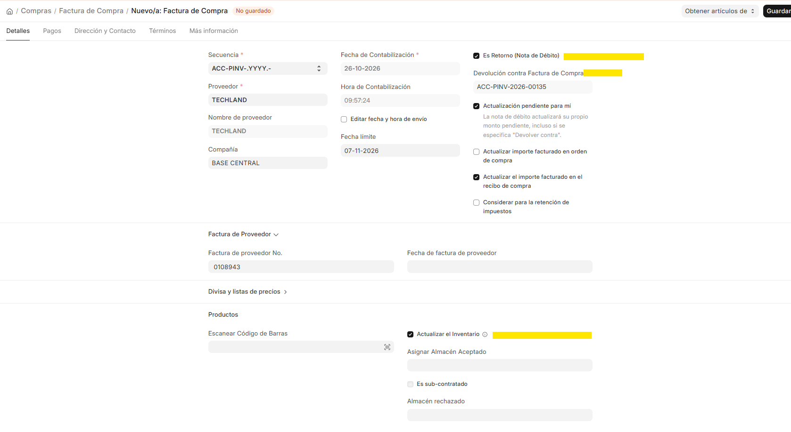
Fig. 5.5 — Stock que sale del almacén
Si tiene IMEI: lapicito → seriales a devolver
Igual que en la compra: lapicito Editar → scroll → pegar solo los IMEI que regresan al proveedor.
Cantidad de la fila = número de seriales.
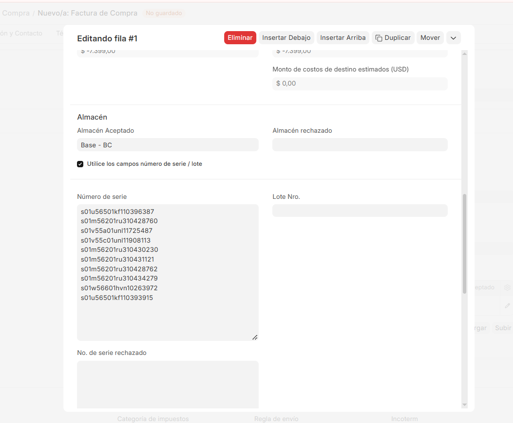
Fig. 5.6 — IMEI de la devolución
Guardar (borrador) → revisar → Enviar
Primero Guardar. Revisa totales (suelen ir en negativo / a favor).
Luego Enviar. Sin Enviar, el inventario no se mueve.
Cómo verificar que sí salió del inventario
Balance de inventario
Abre Balance · misma Compañía · mismo Almacén · Generar / Reconstruir informe.
La cantidad del artículo debe haber bajado en las unidades devueltas.
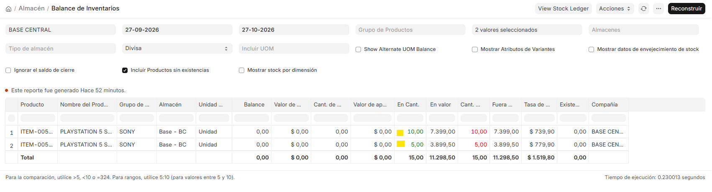
Fig. 5.7 — Balance: stock bajó
Si hay IMEI: Número de serie
Busca cada IMEI devuelto. Ya no debería estar Activo en ese almacén
(pasa a Inactivo / fuera de disponibilidad según el caso).
Con Serial No and Batch Traceability puedes ver la devolución en la cadena de documentos.
Deuda con el proveedor
En la compra original, el monto pendiente baja (o aparece crédito).
El área de CxP / pagos ve el efecto en Cuentas por pagar.
Cómo sé que quedó bien
Documento de devolución Enviado (estado Return / Retorno).
Balance: menos unidades en el almacén de origen.
IMEI: ya no Activo en ese almacén (si aplica).
Compra original sigue existiendo; no se borró.
Errores típicos
Borrar o cancelar la compra en vez de hacer devolución · sacar stock con un traslado inventado
y no tocar al proveedor · olvidar Actualizar inventario · devolver un IMEI que ya se vendió a una sede ·
cerrar sin Guardar / sin Enviar.